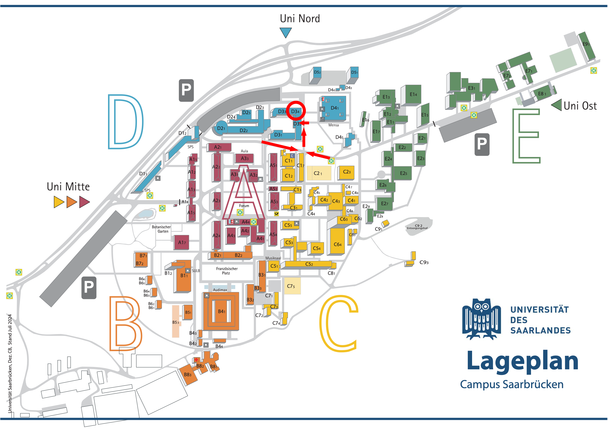
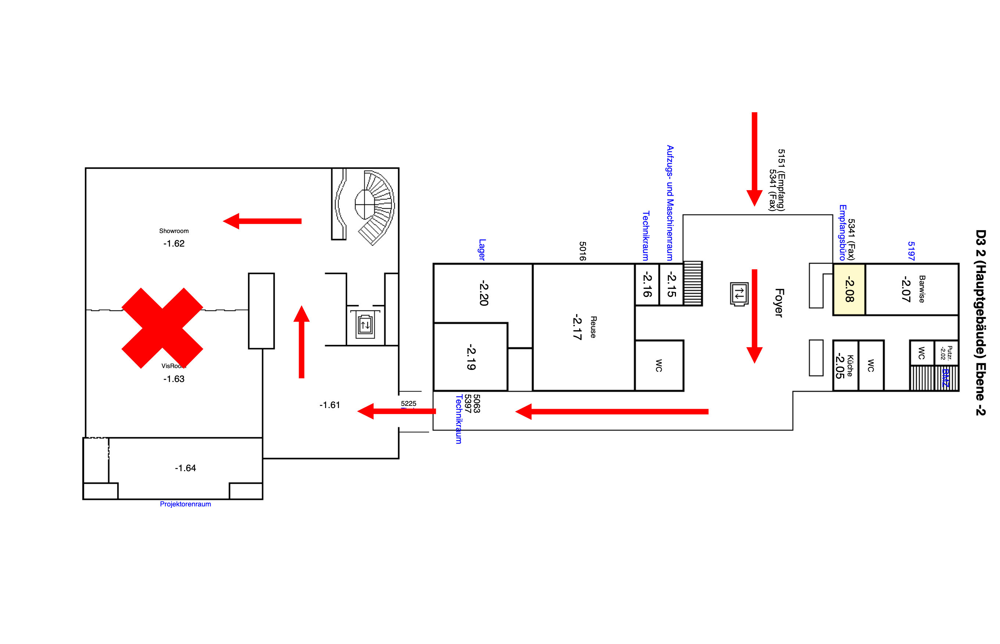

About
This one-day workshop brings together researchers from philosophy and computer science to explore the intersection of normative reasoning and machine learning. Topics include the structure of practical and epistemic reasons, how neural networks may be explained using reasons, the coherence of AI preference orderings, and the broader question of what it would mean for an AI system to be genuinely reason-responsive.
Send us a short mail at yannic.muskalla@dfki.de and we'll get back to you.
Location


Schedule
| Time | Speaker | Talk |
|---|---|---|
| 8:30 – 9:00 | Arrival | |
| 9:00 – 10:00 | Levin Hornischer | Explaining Neural Networks with Reasons |
We propose a new interpretability method for neural networks, based on a novel mathematico-philosophical theory of reasons. Our method computes a so-called reasons vector for each neuron, via the neuron's activation across a range of inputs. With our theory, we next compute how strongly this reasons vector speaks for human-understandable propositions: e.g., 'depicting digit 2' or 'having negative sentiment'. The theory also dictates how to compose interpretations of individual neurons to interpret groups thereof. Our method combines logical and Bayesian perspectives and accounts for polysemanticity (i.e., that a single neuron can figure in multiple concepts). We show both theoretically and experimentally that our method: (1) applies uniformly across architectures and modalities, (2) is scalable, (3) computes strengths for any proposition and not just for output features, (4) is faithful under interventions, and (5) improves robustness and fairness. (This is joint work with Hannes Leitgeb.) |
||
| 10:00 – 10:15 | Break | |
| 10:15 – 11:15 | Jonathan Erhardt | Measuring Preferences in Large Language Models |
As large language models (LLMs) and related AI systems grow more agentic, understanding and predicting their behavior becomes increasingly important. One approach to understanding LLMs is propositional interpretability: assigning preferences and beliefs to LLMs to predict and understand their behavior. Recent research attempts to measure LLM preferences and argues that LLMs form partially coherent utility functions. However, these studies have been criticized because the stated preferences of LLMs are highly dependent on the order of presented outcomes when prompting. This casts doubt on both the validity and the reliability of the methodology used. We introduce a novel methodology to address the issue of order dependence. First, we use the difference in the probabilities of the choice tokens as a proxy for the LLM's cardinal preference strength difference between the options presented. Second, we offer a third option, 'I am indifferent,' alongside the two main options. We show that ordering effects disappear almost entirely for strong preference differences between outcomes and dominate only in cases of weak preference differences. Moreover, in the latter case, LLMs assign the highest token probability to the 'I am indifferent' option if it is available. These findings provide some evidence that LLMs indeed form coherent utility functions and that the previously noted issues were due to methodological shortcomings in measuring preferences. |
||
| 11:15 – 11:30 | Break | |
| 11:30 – 12:30 | Joris Graff | TBD |
| 12:30 – 14:00 | Lunch | 14:00 – 15:00 | RAIME | GRACE |
As AI agents become increasingly autonomous, widely deployed in consequential contexts, and efficacious in bringing about real-world impacts, ensuring that their decisions are not only instrumentally effective but also normatively aligned has become critical. We introduce a neuro-symbolic reason-based containment architecture, Governor for Reason-Aligned ContainmEnt (GRACE), that decouples normative reasoning from instrumental decision-making and can contain AI agents of virtually any design. GRACE restructures decision-making into three modules: a Moral Module (MM) that determines permissible macro actions via deontic logic-based reasoning; a Decision-Making Module (DMM) that encapsulates the target agent while selecting instrumentally optimal primitive actions in accordance with derived macro actions; and a Guard that monitors and enforces moral compliance. The MM uses a reason-based formalism providing a semantic foundation for deontic logic, enabling interpretability, contestability, and justifiability. Its symbolic representation enriches the DMM's informational context and supports formal verification and statistical guarantees of alignment enforced by the Guard. We demonstrate GRACE on an example of a LLM therapy assistant, showing how it enables stakeholders to understand, contest, and refine agent behavior. |
||
| 15:00 – 15:15 | Break | |
| 15:15 – 16:15 | Benoit Alcaraz | Normative Reinforcement Learning: Methods and Challenges |
In today's world, the development of models and architecture for normative agents is crucial to ensure both safety and well-functioning of the infrastructures. In recent years, interest in the field of normative reinforcement learning, more specifically in model-free setups, has grown. This is due to the fact that model-free RL algorithms are now frequently appearing in real-life deployed systems that interact among humans. By nature, these systems are not predictable, as their behaviour is not hard-coded. In this talk, we will see two different paradigms to normative reinforcement learning. We will discuss key challenges for each approach, and our attempts at addressing them. More specifically, the use of lexicographic and balancing approaches, the phenomenon of norm avoidance, and the necessity for implementing normative profiles. |
||
| 16:15 – 16:30 | Break | |
| 16:30 – 17:30 | Liuwen Yu & Leon van der Torre | TBD |